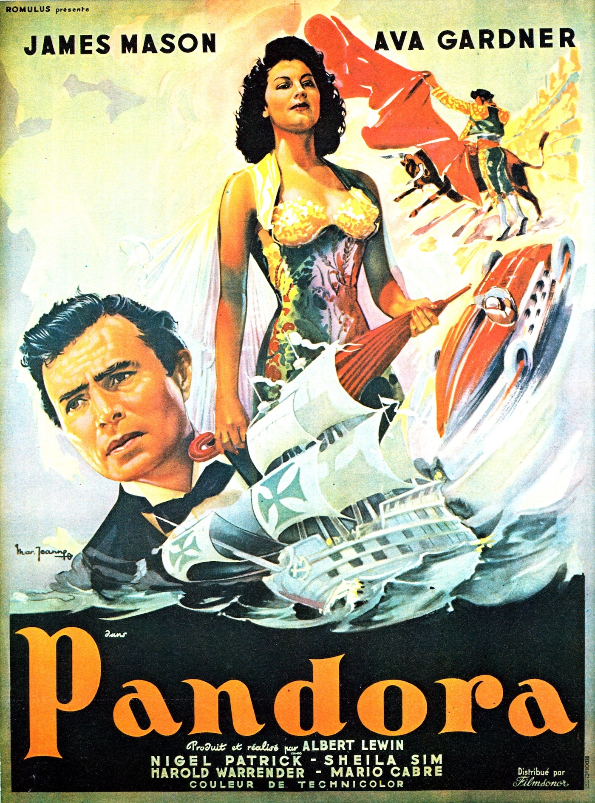

Fiche technique
- Titre original
- Pandora and the Flying Dutchman
- Réalisation
- Albert Lewin
- Scénario
- Albert Lewin — scénario original1
- Photographie
- Jack Cardiff (Technicolor)1
- Musique
- Alan Rawsthorne1
- Montage
- Ralph Kemplen1
- Interprétation
- Ava Gardner (Pandora Reynolds), James Mason (Hendrik van der Zee), Nigel Patrick, Sheila Sim, Harold Warrender, Mario Cabré, Marius Goring1
- Production
- Romulus Films (James et John Woolf) ; distribution MGM1
- Tournage
- Tossa de Mar (Costa Brava, Catalogne) ; Pendine Sands, pays de Galles1
- Budget
- 1,2 million de dollars1
- Durée
- 122 minutes1
- Sortie
- Royaume-Uni, février 1951 ; États-Unis différée après Show Boat12

Synopsis
Esperanza, petit port de la côte espagnole, au printemps 1930. Le film s'ouvre sur la découverte, par des pêcheurs, de deux corps enlacés remontés dans leurs filets7. L'archéologue Geoffrey Fielding entreprend alors de raconter comment on en est arrivé là.
Pandora Reynolds, chanteuse américaine, règne sur la colonie d'expatriés désœuvrés qui hantent les bars de la ville. Elle inspire des passions qu'elle ne partage pas : un soupirant se donne la mort devant elle ; un pilote automobile occupé à préparer une tentative de record de vitesse terrestre accepte, pour lui prouver son amour, de précipiter sa voiture du haut d'une falaise. Elle consent alors à l'épouser — sans rien éprouver.
Une nuit, elle nage jusqu'à un yacht mouillé dans la baie. À bord, un Hollandais solitaire, Hendrik van der Zee, achève un portrait d'elle — peint avant de l'avoir jamais rencontrée7. Ce que Geoffrey finira par établir, en traduisant un manuscrit néerlandais du XVIIe siècle, tient en une phrase : cet homme est le Hollandais volant, condamné à errer sur les mers jusqu'à ce qu'une femme accepte de mourir pour lui1. Entre-temps, le torero Juan Montalvo, ancien amant de Pandora, s'emploie à faire disparaître son rival.
Contexte de production
Albert Lewin est une anomalie hollywoodienne. Formé à Harvard6, monté dans la hiérarchie de la MGM par le poste de producteur avant de passer à la réalisation, il n'a signé qu'une poignée de films — sept selon TCM2 — et n'est jamais devenu un nom populaire. La Harvard Film Archive le décrit comme « tout sauf une figure hollywoodienne typique », attaché à des « artistes et des décadents dont les obsessions sombres les placent en porte-à-faux avec le monde conventionnel », et créditant d'une « maîtrise attentive de la mise en scène qui marie un classicisme hollywoodien soigné à une passion du décor exotique »5.
Pandora est son premier scénario entièrement original1 et son premier long métrage intégralement en couleur7. Le projet a pu se faire à la faveur du report de Quo Vadis en 1949, qui libérait Lewin de ses obligations de producteur ; le financement est venu de la société britannique Romulus Films, des frères James et John Woolf, la MGM assurant la distribution américaine1. Les sources françaises insistent sur le versant négatif de ce montage : c'est parce que la MGM refusait de financer le film que Lewin a dû l'écrire et le produire lui-même67.
Lewin situe le récit dans le milieu de la « génération perdue » — celui de Fitzgerald et de Hemingway6 — et y greffe un appareil de citations : les quatre vers du Rubaiyat d'Omar Khayyam qui ouvrent le film, le « Dover Beach » de Matthew Arnold récité à mi-parcours, Le soleil se lève aussi de Hemingway en toile de fond17. La version de la légende retenue doit à l'opéra de Wagner6.
Man Ray, et la question de qui a peint quoi
Man Ray, ami de Lewin, a participé à la fabrication visuelle du film — mais les sources ne s'accordent pas sur l'étendue exacte de sa contribution, et il faut le dire plutôt que de trancher. Wikipédia lui attribue des pièces d'échecs de facture cubiste et « plusieurs tableaux visibles dans le film »1 ; TCM va plus loin et lui prête directement « le mémorable tableau de Pandora »2 ; le Ciné-club de Caen, lui, attribue la toile à Ferdinand Bellan et réserve à Man Ray l'échiquier de Geoffrey et les photographies d'Ava Gardner7. Le point de convergence est plus intéressant que le litige : dans tous les cas, un surréaliste historique a été appelé à produire les objets autour desquels le film organise son sens.
De l'aveu rapporté par Moviediva, le film entier serait né d'une seule image mentale — une boule de feu roulant devant la statue d'une déesse grecque — que Lewin a maintenue contre les protestations du studio4.
Le tournage, et son roman parallèle
Le tournage de Tossa de Mar a produit sa propre légende, dûment documentée. Jack Cardiff a raconté l'obsession du réalisateur pour sa vedette : « Lewin pensait qu'Ava était une déesse […]. Il restait simplement à la regarder, la regarder »4 — réclamant tant de gros plans qu'il finissait, dit Cardiff, par ne plus filmer que son visage. Sa partenaire Sheila Sim estimait pour sa part que cette beauté écrasait le jugement porté sur son jeu, et tenait Gardner pour « bien meilleure actrice qu'on ne le lui a reconnu »4.
Pendant le tournage, Gardner s'éprit du torero Mario Cabré, qui joue Montalvo. Quand Frank Sinatra fit le voyage d'Espagne, le décorateur John Hawksworth alerta Lewin en rapportant la menace de Cabré — « Quand je le verrai… je vais le tuer » — à quoi Lewin répondit qu'« il ne serait pas bon qu'un de nos acteurs assassine Frank Sinatra »4. Les scènes de corrida, tournées à Gérone, furent réellement dangereuses ; Cabré y déclara : « Peut-être qu'aujourd'hui je vais mourir pour Ava Gardner »4. L'anecdote est plaisante, mais elle dit quelque chose du film : le sacrifice amoureux, sujet de Pandora, se jouait aussi en coulisses, sur le mode de la vantardise.
Structure narrative
Le film est construit sur un retour en arrière encadré : il commence par sa fin — les deux corps ramenés par les filets — puis remonte au printemps précédent, sous la conduite d'un narrateur, l'archéologue Geoffrey Fielding67. Le procédé n'a rien d'ornemental. Il évacue d'emblée le suspense — nous savons que Pandora et Hendrik mourront ensemble — pour déplacer l'intérêt du quoi vers le comment : non pas « que va-t-il arriver ? », mais « qu'est-ce qui peut bien conduire une femme incapable d'aimer à mourir volontairement ? ».
Le choix du narrateur redouble cette logique. Confier le récit à un archéologue, c'est faire du film une opération de datation : Geoffrey lit et traduit le manuscrit du XVIIe siècle qui révèle l'identité de Hendrik, exactement comme il déchiffrerait un tesson gréco-phénicien. Le fantastique n'entre donc pas dans le film par effraction ; il y est introduit par la voie savante, sous forme de document authentifié. C'est la ruse d'écriture la plus efficace de Lewin : elle rend le surnaturel discutable au lieu de le rendre spectaculaire.
Le corps du récit progresse par une série de prétendants — le suicidé, le pilote, le torero, le Hollandais — chacun offrant à Pandora une preuve d'amour d'un degré supérieur. La structure est celle d'un conte à épreuves, où l'enjeu monte jusqu'à ce que la seule surenchère restante soit la mort elle-même. Ce dispositif justifie rétrospectivement le caractère répétitif de la première heure : chaque prétendant est un palier nécessaire de l'escalade.
Mise en scène et procédés techniques
Jack Cardiff sort tout juste de sa collaboration avec Powell et Pressburger, et travaille ici en pleine forme expérimentale3. Le Technicolor n'y sert pas la joliesse : il est utilisé pour produire une étrangeté. Les critiques s'accordent sur la référence tutélaire — Giorgio De Chirico67, dont la peinture métaphysique fournit au film ses places désertes, ses perspectives creusées et ses ombres portées démesurées ; DVDClassik ajoute Magritte à la généalogie6.
Le principe formel le plus constant est un traitement inhabituel de la profondeur de champ. Dylan Adamson observe, à propos de la scène de fiançailles au clair de lune, que « l'arrière-plan écrase presque le premier plan »3 : Pandora est au premier plan, on la regarde, mais son propre regard part vers un navire qui vient de mouiller au fond du cadre. La composition dit ce que les dialogues taisent — le désir est déjà ailleurs. Adamson formule cette économie du regard avec justesse : dans Pandora, « quelqu'un regarde quelqu'un qui regarde quelqu'un d'autre », chaîne qui ne s'interrompt que sur un reflet de lune3.
La logique surréaliste opère aussi par télescopage d'univers. Adamson relève que toreros, pilotes de course et capitaines hollandais du XVIIe siècle coexistent sans que le film daigne justifier cette cohabitation3. Ce n'est pas un défaut de vraisemblance mais une méthode : comme chez De Chirico, « l'échelle, la perspective et le temps sont agencés non selon la logique »3, mais selon une nécessité intérieure.
Reste l'usage du gros plan, dont Cardiff a lui-même souligné l'excès4. On peut y voir la complaisance d'un cinéaste amoureux de son actrice ; on peut aussi y lire un choix cohérent avec le sujet. Filmer Ava Gardner comme un objet d'adoration — cadrée frontalement, éclairée pour la statuaire plus que pour la psychologie — c'est produire à l'image ce que le récit affirme : cette femme est d'abord une idole, et le film devra travailler à la faire redescendre parmi les mortels.
Personnages principaux
Pandora Reynolds
Le trajet du personnage est une descente vers l'humain. DVDClassik le résume exactement : Pandora passe d'une figure indifférente, « statuaire », à une femme passionnée et humanisée6. Au départ, elle exerce sur les hommes un pouvoir qu'elle ne désire pas et dont elle mesure mal le prix : quand un soupirant se tue devant elle, elle reprend sa chanson. Sa cruauté n'est pas de la méchanceté, c'est une absence — elle ne trouve rien en elle qui réponde à ce qu'on lui offre.
Le nom fait le programme. Le film assimile la Pandore grecque à Ève7 : la femme par qui le malheur entre dans le monde. Mais Lewin retourne la fable. Sa Pandora ne libère pas les maux par curiosité ; elle les provoque par indifférence, et se rachète par un acte de volonté. Le mythe est convoqué pour être corrigé.
Hendrik van der Zee
James Mason, déjà installé dans l'emploi du protagoniste ténébreux et magnétique2, incarne un héros mélancolique et torturé6 dont la particularité est d'être en position inverse de la sienne : il ne peut pas mourir, elle ne peut pas aimer. Chacun détient exactement ce qui manque à l'autre.
Sa faute d'origine — avoir tué sa femme sur un soupçon d'infidélité — donne au personnage son épaisseur morale. Le Hollandais n'est pas une victime d'un sort arbitraire : il expie une jalousie meurtrière. Ce qui rend son dilemme final réellement tragique : demander à Pandora de mourir pour lui, ce serait répéter, sous une forme sublimée, le geste par lequel il a jadis disposé de la vie d'une femme.
Le tableau comme troisième personnage
La toile que Hendrik peint avant d'avoir rencontré Pandora est le pivot symbolique du film. Le Ciné-club de Caen restitue la scène décisive : furieuse, elle en gratte le visage ; il transforme alors le portrait en déclarant avoir eu tort de peindre la déesse d'après une femme réelle, et l'abstraction qui en résulte figure l'humanité originelle7. Le geste condense toute la thèse du film : l'idole est effacée pour que la personne apparaisse.
Thèmes
Le prix de l'amour, ou ce qu'on accepte de sacrifier
Le Ciné-club de Caen identifie le thème central sans détour : « ce que l'on accepte de sacrifier » à l'amour, jusqu'à l'acceptation du sacrifice ultime7. Le film procède par gradation matérielle avant d'atteindre l'immatériel — on sacrifie d'abord une voiture de course (un objet coûteux, l'œuvre d'une vie technique), puis une carrière, puis une vie. La question posée par DVDClassik est bien celle que le récit instruit : l'amour justifie-t-il le sacrifice et la damnation6 ?
L'idole et la mortelle
Tout le film travaille l'écart entre l'image d'une femme et la femme elle-même — écart que la production elle-même a reproduit, entre un réalisateur qui la contemplait comme une déesse4 et une partenaire de plateau qui défendait son travail d'actrice4. Que le film ait fini par consacrer Gardner comme icône est une ironie mesurable : l'œuvre qui raconte le désenvoûtement d'une idole a produit une idole.
Le syncrétisme comme méthode
Mythe grec, légende nordique, opéra wagnérien, archéologie gréco-phénicienne, poésie persane et victorienne, surréalisme contemporain : le Ciné-club de Caen parle justement d'un syncrétisme allant « de la Phénicie au surréalisme »7. C'est le principe unificateur du film, et sa principale prise de risque — l'accusation de préciosité, qui lui fut adressée à sa sortie, vise exactement cet empilement de références.
L'éternité comme malédiction
Le film inverse méthodiquement la valeur accordée à l'immortalité. Ce que le Hollandais cherche n'est pas à vivre mais à finir ; la mort y est présentée comme un privilège de mortel. Adamson note que mort et immortalité finissent par fusionner dans une même économie du désir3 — le dénouement ne les oppose plus, il les confond.
Réception critique et postérité
L'accueil initial fut divisé, et le partage se fit sur une ligne nette : chef-d'œuvre ou pose d'esthète. Moviediva résume l'époque en constatant que les comptes rendus oscillaient entre le sommet artistique et la folie prétentieuse4. Aux États-Unis, Howard Thompson, dans le New York Times, tenait le film pour une « étude sérieuse, complexe mais peu excitante », tout en saluant la photographie de Cardiff, capable de « capter les qualités spectrales du récit » et « les beautés exquises des décors et des coutumes espagnols »1.
Le jugement commercial fut plus favorable que le jugement critique : le film fut l'un des succès du box-office britannique de 1951, Kinematograph Weekly le désignant comme un « notable performer »1. Les recettes déclarées — environ 1 247 000 dollars aux États-Unis et au Canada, 354 000 à l'international, pour un budget de 1,2 million1 — dessinent toutefois un résultat serré.
La France a d'abord été sévère : le film y fut jugé prétentieux à sa sortie, et il a fallu attendre plusieurs décennies pour que la critique le reprenne à son compte et lui reconnaisse un statut de chef-d'œuvre6. Le mot le plus juste sur cette réévaluation vient d'ailleurs d'un critique français, cité par Moviediva, qui salua en Gardner « la plus grande femme surréaliste de l'histoire du cinéma »4.
La postérité s'est finalement jouée sur le terrain matériel, celui de la conservation. Martin Scorsese a admiré le film au point que sa Film Foundation en a entrepris la restauration Technicolor2, et une version restaurée en 4K est sortie en février 2020 : plus d'une douzaine d'années de travail, financées in fine par Cohen Media Group, et plus de 700 heures de restauration numérique portant sur 177 120 photogrammes1. Sur Rotten Tomatoes, 68 % des 34 critiques recensés sont favorables1. Enfin, Tossa de Mar a érigé en 1996 une statue d'Ava Gardner sur la colline dominant la plage1 — le film aura donc laissé un monument avant d'obtenir une réputation.
Conclusion
Pandora est un film dont les défauts et les réussites procèdent de la même décision. Lewin a voulu un mélodrame qui pense — qui cite Arnold et Khayyam, qui convoque De Chirico et Man Ray, qui traite la légende du Hollandais volant comme un document d'archive à traduire. Cette ambition produit à la fois ce qui date le film (une littérarité appuyée, des dialogues qui expliquent parfois ce que l'image a déjà dit) et ce qui le rend, soixante-quinze ans plus tard, plus vivant que la plupart des romances de studio de son époque.
Le reproche de préciosité, formulé dès 1951 et longtemps répété en France6, n'est pas infondé — il est simplement mal ciblé. Ce que l'on prenait pour de l'ornement était une méthode : l'accumulation de références hétérogènes est exactement le procédé par lequel le film obtient son régime onirique. Un mélodrame cohérent aurait exigé de choisir entre le torero et le capitaine fantôme ; en refusant de choisir, Lewin fabrique le seul espace où son sujet — un désir qui ne se fixe jamais, jusqu'à ce qu'il se fixe une fois et tue — devient représentable.
Reste la tension que le film n'a pas résolue, et qui fait peut-être sa plus grande valeur documentaire : il raconte le désenvoûtement d'une idole tout en la fabriquant plan par plan. Cardiff a lui-même décrit un tournage où le réalisateur ne filmait plus guère qu'un visage4. Pandora est donc à la fois la critique et le produit de l'adoration cinématographique — et c'est cette contradiction, davantage que son érudition affichée, qui continue de le rendre troublant.
Sources
- Wikipedia (EN), « Pandora and the Flying Dutchman » — en.wikipedia.org
- Turner Classic Movies, article sur Pandora and the Flying Dutchman — tcm.com
- Dylan Adamson, « Pandora and the Flying Dutchman — Albert Lewin », In Review Online, 14 avril 2023 — inreviewonline.com
- Moviediva, « Pandora and the Flying Dutchman » — moviediva.com
- Harvard Film Archive, « Beyond Good & Evil: The Films of Albert Lewin » — harvardfilmarchive.org
- DVDClassik, « Pandora de Albert Lewin (1951) — analyse et critique du film » — dvdclassik.com
- Ciné-club de Caen, « Pandora d'Albert Lewin » — cineclubdecaen.com
- Affiche : collection de référence locale du projet (dépôt vérifié libre de droits par le propriétaire du site)